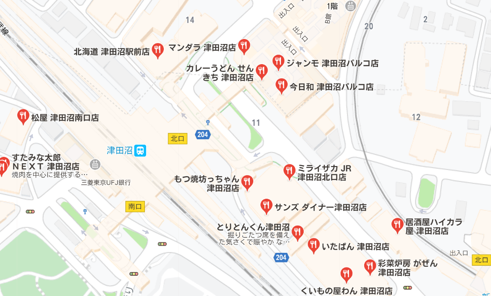

放課後食事のすゝめ
津田沼MAP
 
高校生の皆さんいつも勉強や部活で疲れてませんか？津田沼には、高校生でも気軽に行けるご飯屋さんやカフェなどがたくさんあります。
また、女子高生にもおすすめのタピオカ屋さんもたくさんあります。
そして、インスタ映えにもなります!!!!
ぜひ放課後の息抜きに行ってみてください！
Chatime 別ウインドウで開くリンク
四葉茶坊 別ウインドウで開くリンク
なりたけ津田沼店 別ウインドウで開くリンク
赤から 津田沼店 別ウインドウで開くリンク